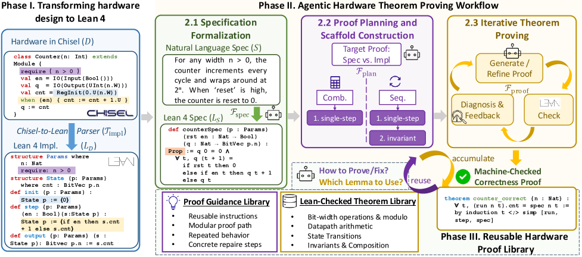
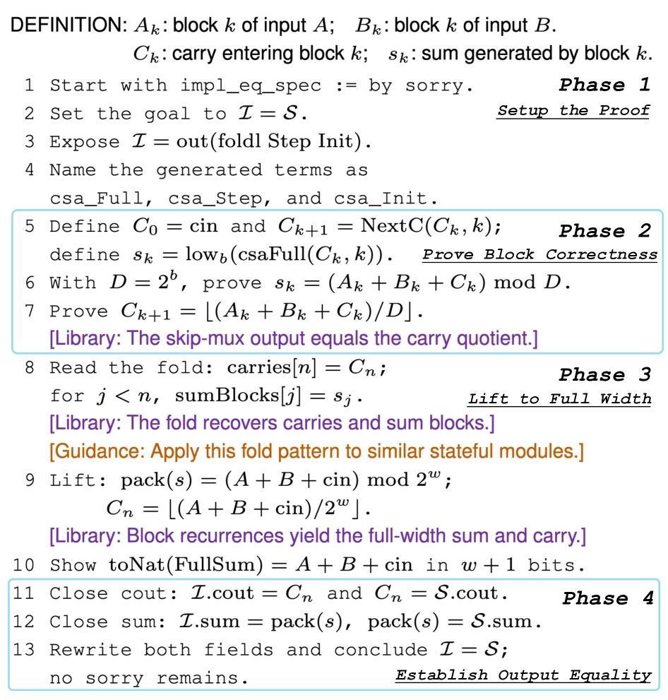
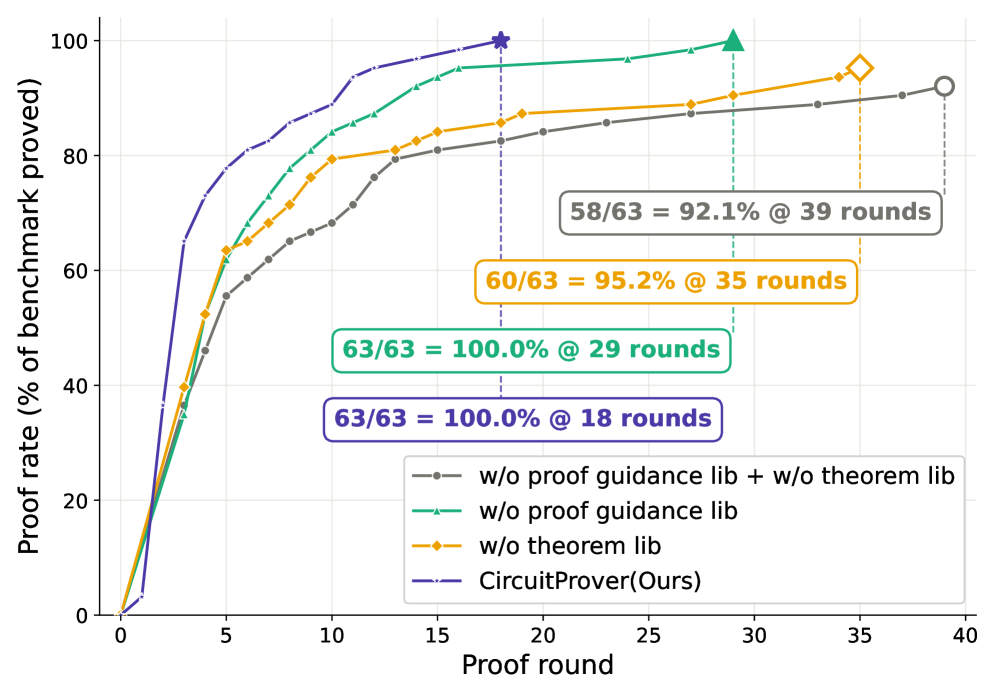

CircuitProver is an agentic Lean 4 framework that translates parameterized Chisel hardware designs into Lean models and proves correctness theorems.
Abstract
Modern integrated circuits (ICs) are becoming increasingly complex, making functional verification a major bottleneck. The dominant hardware formal verification methodology, model checking, verifies each design instance separately and exposes only pass/fail results, so the reasoning behind a proof stays locked inside solver heuristics and is repeatedly reconstructed across related designs. Interactive theorem proving instead yields explicit, reusable proof artifacts, but applying it to hardware remains largely manual, demanding expert effort for formalization, invariant discovery, and proof development. In this paper, we present CircuitProver, an agentic Lean 4-based verification framework supporting proof-accumulation and parameterized verification. CircuitProver automatically translates parameterized hardware designs and their natural language specifications into executable Lean 4 models. It then iteratively constructs machine-checked proofs through Lean feedback to establish that the hardware code complies with the specification. The proving traces and verified theorems are distilled into reusable libraries, where proving strategies guide future agent reasoning and verified lemmas support formal proof reuse across related hardware verification tasks. We further introduce the first benchmark suite for evaluating agentic hardware theorem proving, covering diverse parameterized hardware designs, specifications, proof tasks, and evaluation metrics. Across 63 tasks, CircuitProver successfully proves all benchmarks, while a vanilla agent solves 92.1% of them and requires twice as many proof rounds on average. Ablation studies show that accumulated proof knowledge reduces redundant proof construction across related verification tasks, reducing proof length by 16.3% and verification time by 23.2%.
Problem
Model checking verifies hardware instances separately and hides reasoning as pass/fail results, preventing reuse across related designs. Interactive theorem proving yields reusable proof artifacts but remains largely manual for hardware, requiring expert formalization, invariant discovery, and proof development.
Approach
CircuitProver automatically translates parameterized Chisel hardware designs and natural-language specifications into executable Lean 4 semantic models and Lean theorems. A reasoning agent iteratively constructs machine-checked proofs by decomposing goals, generating lemmas and invariants, and repairing scripts using Lean feedback. Successful proof trajectories are distilled into reusable proof-guidance strategies and Lean-checked theorem libraries for future related tasks. The authors also introduce a benchmark suite of 63 parameterized Chisel verification tasks defined at the Lean level.

Figure 2: Workflow of CircuitProver for agentic hardware theorem proving. The framework translates hardware designs into Lean 4 models, performs specification formulation, hardware-aware proof planning, and iterative theorem proving, and accumulates reusable proof knowledge.

Figure 4: Detailed proof strategy for the carry-skip adder
Results
Across 63 tasks CircuitProver proved all benchmarks, while a vanilla agent solved 92.1% and required about twice as many proof rounds. Accumulated proof knowledge reduced proof length by 16.3% and verification time by 23.2%.

Figure 5: Ablation study of CircuitProver, evaluating the impact of proof guidance and Lean-checked theorem libraries.